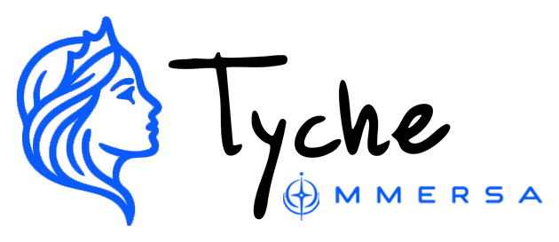
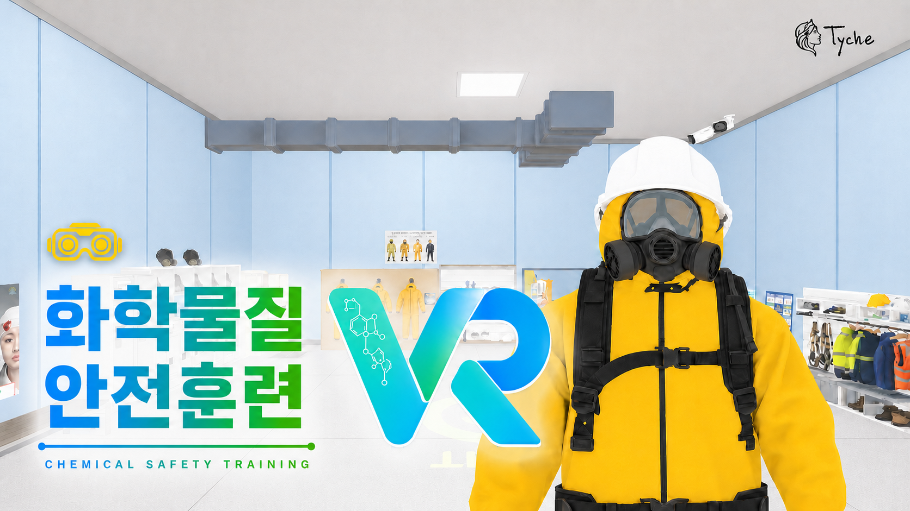

작업을 확인합니다.
작업계획서를 읽고 오늘의 작업과 위험 요소를 파악합니다.

VR 상세 보기CHEMICAL SAFETY TRAINING · VR
작업계획서를 확인하고, 필요한 개인보호구를 직접 선택하고, 오염과 손상 여부를 점검합니다. 화학물질 작업 전 준비 과정을 VR 안에서 수행하는 안전교육 프로젝트입니다.

INSIDE THE EXPERIENCE
실제 위험에 노출되지 않고 작업 전 확인 절차를 반복하며 익힐 수 있도록 구성했습니다.

작업계획서를 읽고 오늘의 작업과 위험 요소를 파악합니다.
보호복, 장갑, 장화와 호흡보호구 중 필요한 장비를 직접 찾습니다.
오염·손상 여부와 최종 착용 상태를 확인해 준비 과정을 마무리합니다.
WHO IT IS FOR
실제 위험 없이 PPE 판단과 작업 전 준비 절차를 설명하고 체험할 수 있습니다.
보호구를 직접 찾고 확인하며 올바른 준비 과정을 단계별로 경험합니다.
EXPLORE THE PROJECT